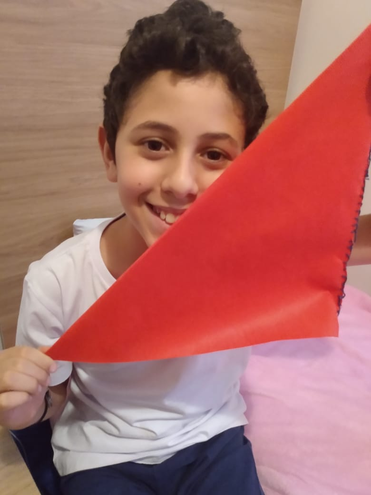
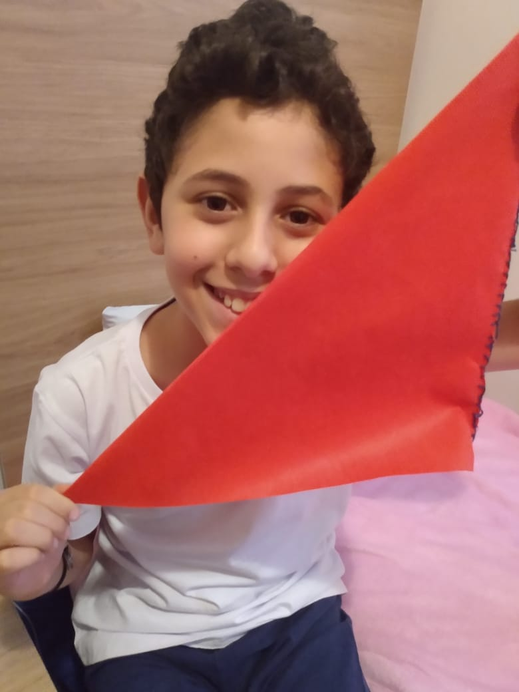
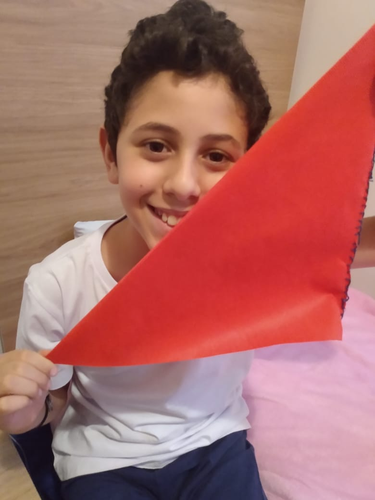

BELEZURAS E TRAVESSURAS!


 



Instituto Educacional Mala Mattiana.
Instagram:@malamattiana
Youtube:Mala Mattiana Instituto Educacional
E-mail:contato@malamattiana.com


OS TRABALHOS DAS CRIANÇAS

VOLTAR AO INÍCIO